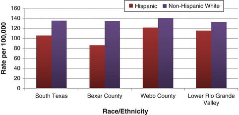
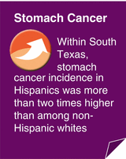

Cancer is a vital health issue in Texas. Thousands of Texas residents are affected by cancer each year, and cancer is the second leading cause of death in the state and in the nation, accounting for one of every four deaths. More than 1.6 million Americans are expected to be diagnosed with cancer and more than 577,000 Americans are expected to die from cancer-related causes in 2012 [1]. In Texas, more than 110,000 residents are expected to be diagnosed with cancer in 2012, and more than 39,000 cancer-related deaths are expected [2].
Cancer begins when certain cells in the body change and start to grow abnormally and uncontrollably. Cancer cells can also invade other organs and tissues and be spread by the bloodstream and lymphatic system in a process called metastasis. This uncontrolled growth and spread of cancer can result in serious health problems and death. Currently, doctors cannot determine what causes cancer in an individual person, but there are several risk factors that may play a role in cancer development including aging, tobacco, alcohol consumption, sunlight, ionizing radiation, certain viruses and bacteria, poor nutrition, lack of physical activity, being overweight, certain hormones, and certain chemicals [3]. Many of these risk factors can be avoided, thus lowering a person’s risk of developing cancer. Other risk factors cannot be avoided, but many cancers can be cured if detected and treated early. Incidence and mortality rates for each cancer are presented as age-adjusted rates or age-specific rates.
Breast Cancer
Breast cancer usually develops in cells that line the ducts that carry milk to the nipples (ductal cancer) or in cells of the glands, which make milk (lobular cancer). Ductal cancer is more common than lobular cancer. Although more rare, cancer can also occur in other tissues of the breast [4]. Breast cancer is the most common diagnosis of cancer in Texas and US women [1]. It is estimated that in 2012, approximately 16,127 Texas women will be diagnosed with invasive breast cancer and 2,867 women will die of the disease [2]. Breast cancer occurs most frequently in women, but men can also develop breast cancer. Hispanic women have a lower risk of developing breast cancer than non-Hispanic women, who are at greater risk than African-American women [5].
Increasing age is the most important risk factor for breast cancer [1, 6]. Other risk factors include a personal or family history of breast cancer, genetic mutations in the BRCA1 or BRCA2 genes, certain breast changes such as atypical hyperplasia, high breast tissue density, high dose radiation to the chest, and certain reproductive factors such as never having children, having a first child after age 30, or having menstrual periods start early or end late in life. Modifiable risk factors for breast cancer include lack of physical activity, alcohol use, being overweight after menopause, and oral contraceptive use [1, 7]. Screening tests for breast cancer include the breast self-exam, clinical breast exam, and screening mammography [7].
Breast Cancer in South Texas
Overall, women in South Texas had a lower average annual age-adjusted incidence of breast cancer (106.3 cases per 100,000 women) than women in the rest of Texas (117.5/100,000) or nation (124.0/100,000). However, Hispanic women in South Texas had a higher incidence of breast cancer (95.6/100,000) than Hispanics in the rest of Texas (90.7/100,000), although they did not have a statistically significantly higher breast cancer incidence compared to Hispanic women nationwide (Fig. 5.1). Hispanic women overall, including those in South Texas, had a much lower incidence of breast cancer than non-Hispanic white women (Fig. 5.1).
Fig. 5.1
Age-adjusted incidence of breast cancer in females by location. Sources: Texas incidence: Texas Cancer Registry, Cancer Epidemiology and Surveillance Branch, Texas Department of State Health Services, 2005–2009 data; Nationwide incidence: National Cancer Institute, 17-region SEER data, 2004–2008
Similar age trends for breast cancer incidence were seen for both Hispanic and non-Hispanic white women in South Texas. Similar to what was observed in the rest of Texas, the risk of breast cancer in South Texas generally increased with age. Among women aged 45 and older, the incidence of breast cancer in non-Hispanic whites was higher than in Hispanics (Fig. 5.2).
Fig. 5.2
Incidence of breast cancer in South Texas females by age group and race/ethnicity, 2005–2009. Source: Texas Cancer Registry, Cancer Epidemiology and Surveillance Branch, Texas Department of State Health Services
In 2005–2009, a higher average annual age-adjusted incidence of breast cancer was seen in South Texas metropolitan counties (107.7/100,000) than nonmetropolitan counties (97.2/100,000). Overall, Bexar County had a higher incidence of breast cancer (117.2/100,000) than South Texas as a whole (106.3/100,000), and the Lower Rio Grande Valley area had a lower breast cancer incidence (90.6/100,000) compared to South Texas overall (Fig. 5.3).

Fig. 5.3
Age-adjusted incidence of female breast cancer in selected South Texas locations, 2005–2009. Source: Texas Cancer Registry, Cancer Epidemiology and Surveillance Branch, Texas Department of State Health Services
The overall breast cancer mortality rate among females in South Texas was 19.7/100,000. For the most part, breast cancer mortality rate patterns in South Texas were similar to incidence patterns.
Cervical Cancer
Cervical cancer typically begins in the lining of the cervix, which is the lower section of the uterus and connects the upper section of the uterus to the vagina. There are two main types of cervical cancer. By far, the most common type is squamous cell carcinoma, which develops from the cells that line the outer surface of the cervix near the top of the vagina. The other type is adenocarcinoma, which develops from the glandular cells that line the cervix [8]. There are usually no symptoms of precancerous changes to the cervix. Therefore, regular screening tests such as Pap tests, which can detect abnormal cervical cells before cancer develops, are of great importance [8, 9].
Even though cervical cancer is one of the most detectable and preventable cancers through regular screening, it remains a serious threat to the lives of Texas women. In 2012, an estimated 1,255 Texas women will be diagnosed with invasive cervical cancer and 392 women will die of the disease [10]. In the USA, Hispanic women are at greater risk of developing cervical cancer than non-Hispanic white women, and African-American women are at greater risk of cervical cancer than are non-Hispanic white women [5].
Certain human papillomaviruses (HPVs) are the most important risk factors for cervical cancer [8, 9]. An HPV vaccine is currently available for girls and women aged 9–26 that may help protect against as much as 70 % of cervical cancer [11, 12]. Women with HIV or other conditions that result in a weakened immune system are also at higher risk of cervical cancer. Other modifiable risk factors include smoking, sexual history, and long-term use of oral contraceptives [8].
Cervical Cancer in South Texas
Overall, cervical cancer incidence was higher among women in South Texas (10.5 cases per 100,000 women) than in the rest of Texas (9.3/100,000) in 2005–2009 (Fig. 5.4). The overall incidence of cervical cancer in both South Texas and rest of Texas were higher than the nationwide incidence (8.1/100,000). As in the rest of Texas and nationwide, Hispanic women in South Texas had a higher incidence of cervical cancer than non-Hispanic whites (Fig. 5.4). This ethnic difference in incidence was not as large in South Texas as in the rest of Texas, however.
Fig. 5.4
Age-adjusted incidence of cervical cancer in females by location. Sources: Texas incidence: Texas Cancer Registry, Cancer Epidemiology and Surveillance Branch, Texas Department of State Health Services, 2005–2009 data; Nationwide incidence: National Cancer Institute, 17-region SEER data, 2004–2008
In South Texas, as in the rest of Texas, age-specific trends in cervical cancer incidence differed between Hispanics and non-Hispanic whites. Incidence peaked in non-Hispanic white women at ages 30–44 but continued to rise with age in Hispanic women (Fig. 5.5). This observation is of particular concern for Hispanics because research suggests that women diagnosed with cervical cancer at ages 50 or older are more likely than younger women to have an advanced stage of the disease [13]. The incidence of cervical cancer in Hispanics was significantly higher than in non-Hispanic whites for ages 45 and older (Fig. 5.5).
Fig. 5.5
Incidence of cervical cancer in South Texas females by age group, 2005–2009. Source: Texas Cancer Registry, Cancer Epidemiology and Surveillance Branch, Texas Department of State Health Services
The overall cervical cancer mortality rate among females in South Texas was 3.4/100,000. Cervical cancer mortality rate patterns were similar to those for cervical cancer incidence.
Colorectal Cancer
Colorectal cancer begins either in the colon (the first 4–5 feet of the large intestine) or the rectum (the last few inches of the large intestine before the anus) [14]. Colorectal cancer is generally slow to develop and usually begins in a noncancerous polyp, which can be removed during a colonoscopy, thus preventing invasive colorectal cancer. The most common type of colorectal cancer is adenocarcinoma, a cancer that begins in glandular tissue in the internal lining of the colon or rectum [15]. Screening tests include the fecal occult blood test, sigmoidoscopy, colonoscopy, double contrast barium enema, and digital rectal exam [16].
Colorectal cancer is the third-most common cancer diagnosis and cause of cancer death in both men and women in the USA and Texas [17]. In 2012, an estimated 10,604 Texas residents will be diagnosed with colorectal cancer and 3,721 will die of the disease [2]. In the USA, men have a higher risk of colorectal cancer than women [17]. Hispanics are at lower risk of developing colorectal cancer than non-Hispanic whites, and African-Americans are at greater risk than non-Hispanic whites [17]. Incidence of colorectal cancer increases with age. In the USA, more than 90 % of all colorectal cancers are diagnosed in those aged 50 or older [17].
Risk factors for colorectal cancer include having colorectal polyps, a personal or family history of colorectal cancer, or certain diseases that cause inflammation of the large intestine such as Crohn’s disease or ulcerative colitis. Modifiable risk factors include obesity, lack of physical activity, diet (a high intake of red or processed meat and a low intake of fruits and vegetables), smoking, and heavy alcohol consumption [16, 17].
Colorectal Cancer in South Texas
Colorectal cancer incidence was lower in South Texas (41.7 cases per 100,000 population) than in the rest of Texas (44.8/100,000) or nation (47.2/100,000). However, the incidence of colorectal cancer among Hispanics in South Texas was slightly higher than the incidence among Hispanics in the rest of Texas (Fig. 5.6). In South Texas, non-Hispanic whites and Hispanics were diagnosed with colorectal cancer at similar rates in 2005–2009 (Fig. 5.6).
Fig. 5.6
Age-adjusted incidence of colorectal cancer by location. Sources: Texas incidence: Texas Cancer Registry, Cancer Epidemiology and Surveillance Branch, Texas Department of State Health Services, 2005–2009 data; Nationwide incidence: National Cancer Institute, 17-region SEER data, 2004–2008
Sex and age patterns of colorectal cancer incidence were the same in South Texas as observed nationwide. In South Texas, males had a much higher incidence of colorectal cancer (52.5/100,000) than females (33.0/100,000), and the risk of colorectal cancer increased with age.
Webb County and the Lower Rio Grande Valley region both had lower incidence rates of colorectal cancer than all of South Texas (Fig. 5.7).
Fig. 5.7
Age-adjusted incidence of colorectal cancer in selected South Texas locations, 2005–2009. Source: Texas Cancer Registry, Cancer Epidemiology and Surveillance Branch, Texas Department of State Health Services
The overall colorectal cancer mortality rate in South Texas was 13.9/100,000. Unlike incidence, colorectal cancer mortality rates among Hispanics in South Texas and the rest of Texas were very similar. For all other comparisons, colorectal cancer mortality rate patterns were similar to those for colorectal cancer incidence.
Prostate Cancer
Prostate cancer develops in the prostate gland, which is a male reproductive system gland located beneath the bladder, in front of the rectum, and surrounding the urethra. The prostate gland makes some of the fluid in semen [18, 19]. Prostate cancer is generally very slow to grow, and many men will develop prostate cancer if they reach advanced age [18]. Screening tests include the digital rectal exam and the blood test for prostate-specific antigen (PSA test) [19].
Prostate cancer is the most common cancer diagnosis and the second leading cause of cancer death in men, both in Texas and nationwide [1]. In 2012, an estimated 16,777 Texas men will be diagnosed with invasive prostate cancer and 1,779 will die of the disease [2]. Hispanic men are at lower risk of developing colorectal cancer than non-Hispanics, and African-American men are at greater risk than whites. The risk of prostate cancer increases with age. Besides age and race/ethnicity, the only other well-known risk factor for prostate cancer is a family history of the disease [1, 19].
Prostate Cancer Incidence in South Texas
Prostate cancer incidence in South Texas (121.2 cases per 100,000 men) was lower than in the rest of Texas (146.4/100,000) and nation (156.0/100,000) (Fig. 5.8). As observed in the rest of Texas and nationwide, non-Hispanic white men in South Texas had a higher incidence of prostate cancer than Hispanic men (Fig. 5.8).
Fig. 5.8
Age-adjusted incidence of prostate cancer among males, by location. Sources: Texas incidence: Texas Cancer Registry, Cancer Epidemiology and Surveillance Branch, Texas Department of State Health Services, 2005–2009 data; Nationwide incidence: National Cancer Institute, 17-region SEER data, 2004–2008
Prostate cancer incidence increased with age for both Hispanic and non-Hispanic white men in South Texas up to ages 70–74. However, at ages 75 and older, incidence declined among whites and leveled off a bit among Hispanics (Fig. 5.9). Non-Hispanic white men had a higher risk of prostate cancer than Hispanic men aged 30–74.
Fig. 5.9
Incidence of prostate cancer among South Texas males, by age group and race/ethnicity, 2005–2009. Source: Texas Cancer Registry, Cancer Epidemiology and Surveillance Branch, Texas Department of State Health Services
In South Texas, the incidence of prostate cancer among men living in metropolitan counties (121.0/100,000) was very similar to the incidence among those in nonmetropolitan counties (120.8/100,000). Overall, the incidence of prostate cancer in Bexar County, Webb County, and the Lower Rio Grande Valley region were all similar to the incidence in South Texas as a whole. However, Hispanics in Webb County and the Lower Rio Grande Valley region had significantly higher incidence rates of prostate cancer than Hispanics in South Texas overall, while Hispanics in Bexar County had a significantly lower rate of prostate cancer than in South Texas overall (Fig. 5.10).

Fig. 5.10
Age-adjusted incidence of prostate cancer among South Texas males in selected South Texas locations, by race/ethnicity, 2005–2009. Source: Texas Cancer Registry, Cancer Epidemiology and Surveillance Branch, Texas Department of State Health Services
The overall prostate cancer mortality rate in South Texas was 18.8/100,000. Like incidence, prostate cancer mortality rates were lower in South Texas than in the rest of Texas or nation. No significant differences in prostate cancer mortality rates were seen between Hispanic and non-Hispanic white men in South Texas, nor between South Texas Hispanic and non-Hispanic white men when compared to Hispanics and non-Hispanic white men in the rest of Texas (Fig. 5.11).
Fig. 5.11
Age-adjusted mortality rate of prostate cancer among males, by location. Sources: Texas mortality: Texas Cancer Registry, Cancer Epidemiology and Surveillance Branch, Texas Department of State Health Services, 2005–2009 data; Nationwide mortality: National Cancer Institute, 17-region SEER data, 2004–2008
The trend in age-specific prostate cancer mortality for South Texas was different from the trend seen in prostate cancer incidence; mortality rates continued to increase among the oldest age groups (Fig. 5.12).
Fig. 5.12
Prostate cancer mortality among South Texas males by age group, 2005–2009. Source: Texas Cancer Registry, Cancer Epidemiology and Surveillance Branch, Texas Department of State Health Services
Lung and Bronchus Cancer
Lung and bronchus cancers are cancers of the respiratory system. The bronchi are tubes that connect the trachea (windpipe) with smaller tubes in the lungs called bronchioles [20, 21]. Most lung cancers not only begin in cells that line the bronchi but also can begin in other parts of the lung such as the bronchioles or alveoli (tiny air sacs attached to the bronchioles) [21].
For treatment purposes, lung and bronchus cancer are grouped into small cell cancers and nonsmall cell cancers, which account for 10–15 % and 85–90 % of all lung and bronchus cancers, respectively [21, 22]. Small cell lung cancer grows more quickly than nonsmall cell lung cancer and is more likely to metastasize; however, it is less common than nonsmall cell lung cancer [22]. There are no recommended screening tests for lung and bronchus cancer for asymptomatic people [1].
Lung and bronchus cancer is the second-most common cancer diagnosis and the leading cause of cancer death among both men and women in the USA and Texas [1]. In 2012, an estimated 14,555 Texans will be diagnosed with lung and bronchus cancer and 10,608 will die of the disease [23]. In the USA, males have a higher risk of lung and bronchus cancer than females [1]. Hispanic men and women are at lower risk of developing lung and bronchus cancer than non-Hispanics. African-American men are at greater risk of lung and bronchus cancer than white men, while white women have a higher risk than African-American women [5]. The most important risk factor for lung and bronchus cancer is cigarette smoking [1]. Other risk factors include exposure to secondhand cigarette smoke, radon, asbestos, certain metals, certain organic chemicals, and air pollution [1, 20].
Lung and Bronchus Cancer in South Texas
The incidence of lung and bronchus cancer in South Texas in 2005–2009 (49.6 cases per 100,000 population) was lower than the rest of Texas (66.9/100,000) and nation (62.0/100,000). Hispanics in South Texas had a similar incidence of lung and bronchus cancer as Hispanics in the rest of Texas; however, non-Hispanic whites in South Texas had a lower incidence (66.1/100,000) than non-Hispanic whites in the rest of Texas (72.8/100,000). As also observed in the rest of Texas and nationwide, Hispanics in South Texas had a lower incidence of lung and bronchus cancer than non-Hispanic whites, who had almost twice the risk of lung cancer as Hispanics (Fig. 5.13).
Fig. 5.13
Age-adjusted incidence of lung and bronchus cancer by location. Sources: Texas incidence: Texas Cancer Registry, Cancer Epidemiology and Surveillance Branch, Texas Department of State Health Services, 2005–2009 data; Nationwide incidence: National Cancer Institute, 17-region SEER data, 2004–2008
The incidence of lung and bronchus cancer is very rare until ages 30–44 and then rises until ages 75–79 for non-Hispanic whites and ages 80–84 for Hispanics (Fig. 5.14). Among those aged 45 and older in South Texas, non-Hispanic whites have a statistically significantly higher lung and bronchus cancer incidence than Hispanics.
Fig. 5.14
Incidence of lung and bronchus cancer in South Texas by age group and race/ethnicity, 2005–2009. Source: Texas Cancer Registry, Cancer Epidemiology and Surveillance Branch, Texas Department of State Health Services
As seen nationwide, South Texas males had a higher incidence of lung and bronchus cancer than females. The incidence of lung and bronchus cancer was 1.7 times higher among non-Hispanic white males than non-Hispanic white females and was 2.4 times higher among Hispanic males than Hispanic females (Fig. 5.15).
Fig. 5.15
Age-adjusted incidence of lung and bronchus cancer in South Texas by sex and race/ethnicity, 2005–2009. Source: Texas Cancer Registry, Cancer Epidemiology and Surveillance Branch, Texas Department of State Health Services
The lung and bronchus cancer mortality rate in South Texas was 36.2/100,000. For the most part, lung cancer mortality rate patterns were similar to those for lung cancer incidence.
Liver and Intrahepatic Bile Duct Cancer
Liver and intrahepatic bile duct cancer occurs either in the liver, an organ that metabolizes nutrients, makes bile, and detoxifies chemicals, or in intrahepatic bile ducts, tubes within the liver that carry bile to the gallbladder. There are no recommended screening tests for liver and intrahepatic bile duct cancer for asymptomatic people [24].
Liver and intrahepatic bile duct cancer is relatively rare in the USA and in Texas. In 2012, an estimated 2,197 Texas residents will be diagnosed with liver and intrahepatic bile duct cancer and 1,768 residents will die of the disease [25]. The incidence of liver and intrahepatic bile duct cancer increases with age, and men are twice as likely as women to develop liver cancer [26]. Hispanic men and women have a much higher risk of developing liver and intrahepatic bile duct cancer than non-Hispanics. Risk factors for liver and intrahepatic bile duct cancer include heavy alcohol use, chronic infection with hepatitis B or hepatitis C, and family history of liver cancer [24, 26].
Liver and Intrahepatic Bile Duct Cancer in South Texas
The South Texas incidence of liver and intrahepatic bile duct cancer was 12.2 cases per 100,000 population in 2005–2009, about a 50 % higher incidence than in the rest of Texas (8.4/100,000) and nation (7.3/100,000) (Fig. 5.16). In South Texas, the incidence of liver and intrahepatic bile duct cancer among Hispanics was more than twice as high as that among non-Hispanic whites (rate ratio = 2.4) (Fig. 5.16).
Fig. 5.16
Age-adjusted incidence of liver and intrahepatic bile duct cancer by location. Sources: Texas incidence: Texas Cancer Registry, Cancer Epidemiology and Surveillance Branch, Texas Department of State Health Services, 2005–2009 data; Nationwide incidence: National Cancer Institute, 17-region SEER data, 2004–2008
The incidence of liver and intrahepatic bile duct cancer was more than three times greater in South Texas males than in females (19.5/100,000 vs. 6.2/100,000). As observed nationwide, liver and intrahepatic bile duct cancer incidence in South Texas increased with age. The incidence of liver cancer was very low until ages 45–49. Among older age groups (ages 55 and older), Hispanics had a significantly higher rate of liver and intrahepatic bile duct cancer than non-Hispanic whites, and this rate differential increased with increasing age (Fig. 5.17).
Fig. 5.17
Incidence of liver and intrahepatic bile duct cancer in South Texas by age group and race/ethnicity, 2005–2009. Source: Texas Cancer Registry, Cancer Epidemiology and Surveillance Branch, Texas Department of State Health Services
In South Texas, the incidence of liver and intrahepatic bile duct cancer was slightly but not significantly higher in metropolitan counties (12.5/100,000) than nonmetropolitan counties (10.8/100,000). Liver and intrahepatic bile duct cancer incidence in the Lower Rio Grande Valley region (11.8/100,000) was similar to the incidence for South Texas as a whole (12.2/100,000). Rates for Webb and Bexar counties were slightly higher than those in South Texas as a whole, but only Bexar County’s incidence rate was statistically significant (Fig. 5.18).
Fig. 5.18
Age-adjusted incidence of liver and intrahepatic bile duct cancer in selected South Texas locations, 2005–2009. Source: Texas Cancer Registry, Cancer Epidemiology and Surveillance Branch, Texas Department of State Health Services
The overall liver and intrahepatic bile duct cancer mortality rate in South Texas was 9.3/100,000. For the most part, patterns of liver cancer mortality rate in South Texas were similar to those for liver cancer incidence.
Stomach Cancer
Stomach cancer, also called gastric cancer, usually develops in the cells that line the inside of the stomach. There are no recommended screening tests for stomach cancer in asymptomatic people [27].

Stomach cancer is a relatively rare cancer both in the USA and in Texas. In 2012, an estimated 1,731 Texas residents will be diagnosed with stomach cancer and 954 will die of the disease [25]. The US average annual age-adjusted incidence rate of stomach cancer for 2004–2008 was 10.8 cases per 100,000 in men and 5.4/100,000 in women. Hispanic men and women have a higher risk of developing stomach cancer than non-Hispanics whites [27]. The incidence of stomach cancer increases with age. Other risk factors for stomach cancer include Helicobacter pylori infection, certain health conditions such as pernicious anemia or chronic gastritis, and a family history of stomach cancer. Modifiable risk factors include smoking and a diet high in smoked, salted, or pickled foods [28].
Stomach Cancer in South Texas
South Texas had a slightly higher incidence of stomach cancer (8.3/100,000) than the rest of Texas (6.7/100,000) or nation (7.7/100,000). In South Texas, stomach cancer incidence in Hispanics (11.4/100,000) was more than two times higher than the incidence in non-Hispanic whites (4.7/100,000) (Fig. 5.19).
Fig. 5.19
Age-adjusted incidence of stomach cancer by location, 2005–2009. Sources: Texas incidence: Texas Cancer Registry, Cancer Epidemiology and Surveillance Branch, Texas Department of State Health Services, 2005–2009 data; Nationwide incidence: National Cancer Institute, 17-region SEER data, 2004–2008
As observed nationwide, the incidence of stomach cancer in South Texas residents increased with age. Hispanics had a higher stomach cancer incidence than non-Hispanic whites among persons aged 45 and older (Fig. 5.20).
Fig. 5.20
Incidence of stomach cancer in South Texas by age group and race/ethnicity, 2005–2009. Source: Texas Cancer Registry, Cancer Epidemiology and Surveillance Branch, Texas Department of State Health Services
In South Texas, the incidence of stomach cancer was almost two times higher in Hispanic males than in Hispanic females, and stomach cancer incidence was 2.4 times higher in non-Hispanic white males than in non-Hispanic white females (Fig. 5.21).
Fig. 5.21
Age-adjusted incidence of stomach cancer in South Texas by sex and race/ethnicity, 2005–2009. Source: Texas Cancer Registry, Cancer Epidemiology and Surveillance Branch, Texas Department of State Health Services
The overall stomach cancer mortality rate in South Texas was 4.6/100,000. Stomach cancer mortality rate patterns were similar to those for stomach cancer incidence.
Gallbladder Cancer
Gallbladder cancer usually develops in cells that line the inside of the gallbladder, a small pear-shaped organ that stores bile and is located below the right lobe of the liver [29].

Gallbladder cancer is a relatively rare cancer in both the USA and in Texas. In 2012, an estimated 9,810 new cases of gallbladder and other biliary cancer are expected in the USA as well as 3,200 deaths [1]. In the USA, gallbladder cancer is most common in Hispanic and Native American populations. Women are more than twice as likely as men to develop gallbladder cancer. Incidence of gallbladder cancer increases with age; three of every four people diagnosed with gallbladder cancer in the USA are older than age 65 [29]. Other risk factors for gallbladder cancer include having gallstones and inflammation of the gallbladder, typhoid, a family history of gallbladder cancer, and exposure to certain industrial chemicals. Obesity is a modifiable risk factor for gallbladder cancer [29].
Gallbladder Cancer in South Texas
Overall, South Texas had a higher incidence of gallbladder cancer (1.7 cases per 100,000 population) than the rest of Texas (1.1/100,000) and nation (1.2/100,000). In South Texas, the incidence of gallbladder cancer in Hispanics (2.5/100,000) was 2.8 times higher than the incidence in non-Hispanic whites (0.9/100,000) (Fig. 5.22).
Fig. 5.22
Age-adjusted incidence of gallbladder cancer by location. Sources: Texas incidence: Texas Cancer Registry, Cancer Epidemiology and Surveillance Branch, Texas Department of State Health Services, 2005–2009 data; Nationwide incidence: National Cancer Institute, 17-region SEER data, 2004–2008
As observed nationwide, the incidence of gallbladder cancer in South Texas increased with age. The difference in gallbladder cancer incidence between Hispanics and non-Hispanic whites grew with age, too (Fig. 5.23), and Hispanics aged 45 and older had a significantly higher incidence of gallbladder cancer than non-Hispanic whites.
Fig. 5.23
Incidence of gallbladder cancer in South Texas by age group and race/ethnicity, 2005–2009. Source: Texas Cancer Registry, Cancer Epidemiology and Surveillance Branch, Texas Department of State Health Services
In South Texas, gallbladder cancer incidence was higher in females (2.3/100,000) than males (1.0/100,000). Among both Hispanics and non-Hispanic whites in South Texas, females had roughly twice the risk of gallbladder cancer as males (Fig. 5.24).
Fig. 5.24
Age-adjusted incidence of gallbladder cancer in South Texas by sex and race/ethnicity, 2005–2009. Source: Texas Cancer Registry, Cancer Epidemiology and Surveillance Branch, Texas Department of State Health Services
The overall gallbladder cancer mortality rate in South Texas was 0.8/100,000. Gallbladder cancer mortality rate patterns were similar to those for gallbladder cancer incidence.
Childhood and Adolescent Leukemia
Leukemia is a cancer that develops in bone marrow in cells that eventually circulate in the blood or lymphatic system. Leukemia can be classified by the type of cell where lymphocytes (a type of white blood cell) and is called lymphocytic leukemia. Leukemias that start in other types of immature cells found in the blood, such as red blood cells, white blood cells other than lymphocytes, and platelets, are called myelogenous (or myeloid) leukemias. Leukemias can also be divided into two additional groups, chronic or acute. Most leukemia in children is acute [30].
Leukemia is the most common cancer in children and adolescents, both in the USA and in Texas [30]. Roughly one-third of all childhood cancers are leukemias [1]. Among children with leukemia, about 75 % will be diagnosed with acute lymphocytic leukemia (ALL) [1, 30]. Most of the remaining cases of childhood leukemia will be acute myelogenous leukemia (AML). There are no recommended screening tests for leukemia in asymptomatic children or adolescents [30].
Cancer in children and adolescents is relatively rare. Over 10 years (2000–2009), there were 2,859 cases of leukemia, myeloproliferative or myelodysplastic disease in Texas children aged 0–14, and an additional 548 cases in adolescents aged 15–19 [31]. Hispanic children and adolescents are at slightly higher risk of developing leukemia, myeloproliferative or myelodysplastic disease compared to non-Hispanic white children and adolescents, while African-American children and adolescents have the lowest risk [5].In general, rates of leukemia, myeloproliferative or myelodysplastic disease are slightly higher in boys than girls [5, 30]. Little is known about the risk factors for childhood and adolescent leukemia. The few known risk factors include radiation exposure and certain genetic conditions such as Down’s syndrome and Li–Fraumeni syndrome [30].
Childhood and Adolescent Leukemia in South Texas
Overall, the incidence of childhood and adolescent leukemia in South Texas from 2000 to 2009 (53.5 cases per million children or adolescents) was higher than the incidence in the rest of Texas (46.0/million) or nation (44.9/million). However, Hispanics and non-Hispanic whites in South Texas had fairly similar incidences of childhood and adolescent leukemia compared to their counterparts in the rest of Texas and nationwide (Fig. 5.25). As also observed in the rest of Texas and nationwide, the incidence of childhood and adolescent leukemia in South Texas was statistically significantly higher for Hispanics (58.1/million) than for non-Hispanic whites (40.7/million) (Fig. 5.25).
Fig. 5.25
Age-adjusted incidence of child and adolescent leukemia by location, 2000–2009. Sources: Texas incidence: Texas Cancer Registry, Cancer Epidemiology and Surveillance Branch, Texas Department of State Health Services, 2000–2009 data; Nationwide incidence: National Cancer Institute, 17-region SEER data, 1999–2008
In South Texas, the incidence of childhood leukemia (58.6/million) was about one-and-a-half times higher than the incidence of adolescent leukemia (38.3/million) during 2000–2009. As is true both statewide and nationally, the incidence of leukemia in South Texas decreased with age. Incidence was highest among children aged 0–4 (Fig. 5.26) [32, 33].
Fig. 5.26
Incidence of child and adolescent leukemia in South Texas by age group, 2000–2009. Source: Texas Cancer Registry, Cancer Epidemiology and Surveillance Branch, Texas Department of State Health Services
As observed nationwide, incidence of childhood and adolescent leukemia in South Texas was higher for males (62.8/million) than females (43.7/million). The overall child and adolescent leukemia mortality rate in South Texas was 12.8/million. The trend in age-specific child and adolescent leukemia was quite different than the trend in incidence; the highest mortality rate was seen among the adolescent (15–19) age group (Fig. 5.27). This is also true statewide and nationally; leukemia subtypes differ with age at diagnosis, resulting in less favorable survival rates for infants less than 1 year, followed by adolescents aged 15–19 [33].
Fig. 5.27
Child and adolescent leukemia mortality in South Texas by age group, 2000–2009. Source: Texas Cancer Registry, Cancer Epidemiology and Surveillance Branch, Texas Department of State Health Services
Summary: Cancer Incidence and Mortality
Table 5.1
Summary table of age-adjusted incidence in South Texas, the rest of Texas, and nationwide for each of the cancer types analyzed
Incidence per 100,000 populationa
| |||
|---|---|---|---|
Cancer type | South Texas, 2005–2009 | Rest of Texas, 2005–2009 | USA, 2004–2008 |
Breast cancer | 106.3 | 117.5 | 124.0 |
Cervical cancer | 10.5 | 9.3 | 8.1 |
Colorectal cancer | 41.7 | 44.8 | 47.2 |
Prostate cancer | 121.2 | 146.4 | 156.0 |
Lung and bronchus cancer | 49.6 | 66.9 | 62.0 |
Liver and intrahepatic bile duct cancer | 12.2 | 8.4 | 7.3 |
Stomach cancer | 8.3 | 6.7 | 7.7 |
Gallbladder cancer | 1.7 | 1.1 | 1.2 |
Childhood and adolescent leukemia (2000–2009) | 53.5 per million | 46.0 per million | 44.9 per million |
Table 5.2
Summary table of age-adjusted mortality rates in South Texas, the rest of Texas, and nationwide for each of the cancer types analyzed
Mortality per 100,000 populationa
| |||
|---|---|---|---|
Cancer type | South Texas, 2005–2009 | Rest of Texas, 2005–2009 | USA, 2004–2008 |
Breast cancer | 19.7 | 22.7 | 23.5 |
Cervical cancer | 3.4 | 2.8 | 2.4 |
Colorectal cancer | 13.9 | 16.7 | 17.1 |
Prostate cancer | 18.8 | 22.1 | 24.4 |
Lung and bronchus cancer | 36.2 | 50.2 | 51.6 |
Liver and intrahepatic bile duct cancer | 9.3 | 6.7 | 5.3 |
Stomach cancer | 4.6 | 3.7 | 3.7 |
Gallbladder cancer | 0.8 | 0.6 | 0.6 |
Childhood and adolescent leukemia (2000–2009) | 12.0 per million | 7.7 per million | 8.0 per million |
References
1.
American Cancer Society. Cancer facts and figures 2012. Atlanta, GA: American Cancer Society; 2012.
2.
Texas Department of State Health Services. Texas cancer registry. Expected new cancer cases and deaths by primary site, Texas, 2012. 2012. http://www.dshs.state.tx.us/Expected-Numbers-of-Cancer-Cases-and-Deaths-Texas-2012.aspx. Accessed Feb 2012.
3.
National Cancer Institute. What you need to know about cancer – an overview: risk factors. 2006. http://www.cancer.gov/cancertopics/wyntk/cancer/page3. Accessed Feb 2012.
4.
American Cancer Society. Overview: breast cancer – what is breast cancer? 2012. http://bit.ly/Qmpa7q. Accessed Feb 2012.
5.
6.
National Cancer Institute. National Cancer Institute factsheet: probability of breast cancer in American women. 2010. http://www.cancer.gov/cancertopics/factsheet/detection/probability-breast-cancer. Accessed Feb 2012.
7.
National Cancer Institute. What you need to know about breast cancer. 2009. http://www.cancer.gov/cancertopics/wyntk/breast/. Accessed Jan 2012.
8.
American Cancer Society. Cervical cancer. 2012. http://www.cancer.org/acs/groups/cid/documents/webcontent/003094-pdf.pdf. Accessed Feb 2012.
9.
National Cancer Institute. What you need to know about cervical cancer. 2008. http://www.cancer.gov/cancertopics/wyntk/cervix/. Accessed Feb 2012.
10.
Texas Department of State Health Services. Texas cancer registry. Expected new cancer cases and deaths by primary site, Texas, 2012. 2011. http://www.dshs.state.tx.us/Expected-Numbers-of-Cancer-Cases-and-Deaths-Texas-2012.aspx. Accessed Feb 2012.
11.
National Institues of Health. Cervical cancer fact sheet. 2010. http://report.nih.gov/NIHfactsheets/ViewFactSheet.aspx?csid=76. Accessed Feb 2012.
12.
Centers for Disease Control and Prevention. HPV vaccine information for young women – fact sheet. 2011. http://www.cdc.gov/std/hpv/stdfact-hpv-vaccine-young-women.htm. Accessed May 2012.
13.
Williams M, Mokry B, Risser D, Betts P, Weiss N. Cervical cancer in Texas 2006. Austin, TX: Texas Department of State Health Services; 2006.
14.
National Cancer Institute. Colon and rectal cancer. 2012. http://www.cancer.gov/cancertopics/types/colon-and-rectal. Accessed Feb 2012.
15.
American Cancer Society. Colorectal cancer. 2011. http://www.cancer.org/acs/groups/cid/documents/webcontent/003096-pdf.pdf. Accessed Feb 2012.
16.
National Cancer Institute. What you need to know about cancer of the colon and rectum. 2006. http://www.cancer.gov/cancertopics/wyntk/colon-and-rectal. Accessed Feb 2012.
17.
American Cancer Society. Colorectal cancer facts and figures 2011–2013. Atlanta: American Cancer Society; 2010.
18.
American Cancer Society. Prostate cancer overview. 2012. http://www.cancer.org/acs/groups/cid/documents/webcontent/003072-pdf.pdf. Accessed Mar 2012.
19.
National Cancer Institute. What you need to know about prostate cancer. 2012. http://www.cancer.gov/cancertopics/wyntk/prostate/. Accessed Mar 2012.
20.
National Cancer Institute. What you need to know about lung cancer. 2012. http://www.cancer.gov/cancertopics/wyntk/lung. Accessed Mar 2012.
21.
American Cancer Society. Lung cancer (non-small cell). 2012. http://www.cancer.org/acs/groups/cid/documents/webcontent/003115-pdf.pdf. Accessed Mar 2012.
22.
American Cancer Society. Lung cancer (small cell). 2012. http://www.cancer.org/acs/groups/cid/documents/webcontent/003116-pdf.pdf. Accessed Mar 2012.
23.
Texas Department of State Health Services. Texas cancer registry. Expected new cancer cases and deaths by primary site, Texas, 2007. 2012. http://www.dshs.state.tx.us/Expected-Numbers-of-Cancer-Cases-and-Deaths-Texas-2012.aspx. Accessed Mar 2012.
24.
American Cancer Society. Liver cancer. 2011. http://www.cancer.org/acs/groups/cid/documents/webcontent/003114-pdf.pdf. Accessed Mar 2012.
25.
Texas Department of State Health Services. Texas cancer registry. Expected new cancer cases and deaths by primary site, Texas, 2012. 2012. http://www.dshs.state.tx.us/Expected-Numbers-of-Cancer-Cases-and-Deaths-Texas-2012.aspx. Accessed Mar 2012.
26.
National Cancer Institute. What you need to know about liver cancer. 2012. http://www.cancer.gov/cancertopics/wyntk/liver. Accessed Mar 2012.
27.
American Cancer Society. Stomach cancer. 2012. http://www.cancer.org/acs/groups/cid/documents/webcontent/003141-pdf.pdf. Accessed Mar 2012.
28.
National Cancer Institute. What you need to know about stomach cancer: risk factors. 2009. http://www.cancer.gov/cancertopics/wyntk/stomach. Accessed Mar 2012.
29.
American Cancer Society. Gallbladder cancer. 2012. http://www.cancer.org/acs/groups/cid/documents/webcontent/003101-pdf.pdf. Accessed Mar 2012.
30.
American Cancer Society. Childhood leukemia. 2010. http://www.cancer.org/acs/groups/cid/documents/webcontent/003095-pdf.pdf. Accessed Mar 2012.
31.
Texas Department of State Health Services IDCU. 2009. Texas Cancer Registry Public-Use SEER*Stat Database, 1995–2009 Incidence, Texas statewide based on NPCR-CSS Submission, cut-off 11/23/11. February 2011. http://www.dshs.state.tx.us/tcr/limited-use-data.shtm. Accessed May 2013.
32.
Surveillance, Epidemiology, and End Results (SEER) Program SEER*Stat Database: Incidence–SEER 13 Regs Limited-Use, Nov 2008 Sub (1992), Katrina/Rita Population Adjustment. -Linked to County Attributes -Total U.S., 1969–2009 Counties. Cancer incidence and survival among children and adolescents. National Cancer Institute, DCCPS, Surveillance Research Program, Cancer Statistics Branch, Nov 2009 Release. http://www.seer.cancer.gov. Accessed May 2013.
33.
SEER Program SEER*Stat Database: Incidence–SEER 13 Regs Limited-Use, Nov 2008 Sub (1992), Katrina/Rita Population Adjustment. -Linked to County Attributes -Total U.S., 1969–2009 Counties. Cancer epidemiology in older adolescents and young adults 15 to 29 years of age including SEER incidence and survival. National Cancer Institute, DCCPS, Surveillance Research Program, Cancer Statistics Branch, Nov 2009 Release. http://www.seer.cancer.gov. Accessed May 2013.